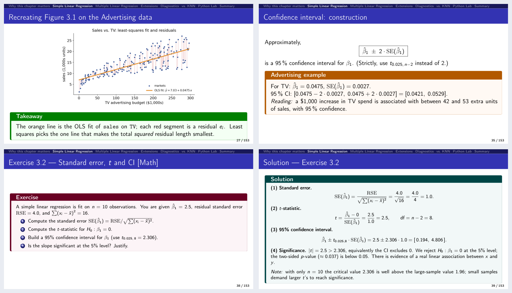
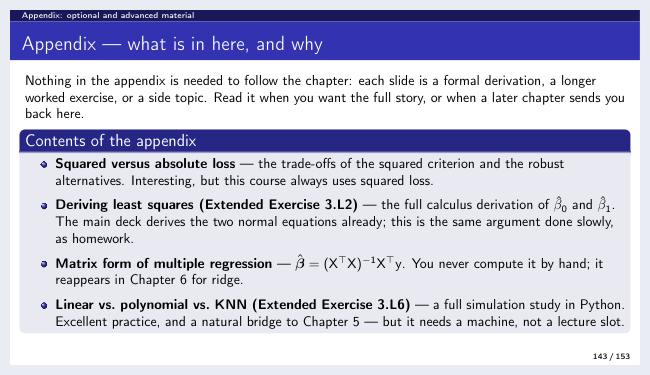

Lecture slides¶
Ten Beamer decks live in Chapters/chapter_NN/, each folder self-contained:
chapter_NN.tex, its images/, the compiled chapter_NN.pdf — and the
companion lab for that chapter, so everything for one week sits
together. The PDFs below are served with this documentation.
901 slides in the main flow +199 in optional appendices 74 short + 35 extended exercises ~110 purpose-built figures
{kind=link}

What a deck looks like: a figure computed from the course data with its takeaway, a worked example with real numbers, an in-deck exercise, and the worked solution that follows it two slides later.¶
The decks¶
Page counts are given as main flow and (appendix): every deck ends with an appendix of optional, more advanced material that the main thread never depends on — see what each appendix holds.
Ch. |
Deck |
What it covers |
Exercises |
Slides |
|
|---|---|---|---|---|---|
0 |
Precourse (a) — Statistics refresher |
Descriptive statistics, probability and Bayes, distributions, standard errors and confidence intervals, testing and power, simple regression, the Python toolkit |
10 + 4 |
112 (+20) |
|
0b |
Precourse (b) — Toolkit |
Reading notation, logs and exponentials, odds and the logit, likelihood, computational cost, the Python patterns the labs use |
6 + 2 |
53 (+14) |
|
1 |
Introduction |
What statistical learning is, prediction vs. inference, the three motivating data sets, notation and the design matrix |
3 + 1 |
74 (+8) |
|
2 |
Statistical Learning |
Estimating f, parametric vs. nonparametric, the flexibility trade-off, training vs. test error, bias–variance — the Bayes classifier and KNN now sit in the appendix |
8 + 4 |
81 (+42) |
|
3 |
Linear Regression |
Least squares, standard errors and t/F inference, confidence vs. prediction intervals, dummies and interactions, the four diagnostics |
12 + 6 |
149 (+19) |
|
4 |
Classification |
Logistic regression and the odds scale, multiple predictors and confounding, the confusion matrix, ROC and AUC — the generative models (LDA, QDA, naive Bayes) now sit in the appendix |
10 + 6 |
91 (+52) |
|
5 |
Resampling Methods |
The validation set and why it wobbles, LOOCV, k-fold CV and the trade-off inside the estimate, CV pitfalls, the bootstrap |
6 + 3 |
85 (+11) |
|
6 |
Model Selection & Regularization |
Best subset and stepwise selection, Cₚ/AIC/BIC/adjusted R², ridge, the lasso and its sparsity, PCR, the p > n regime |
6 + 3 |
73 (+14) |
|
7 |
Moving Beyond Linearity |
Polynomials and step functions, regression splines and knots, natural splines, smoothing splines, LOESS, GAMs |
6 + 3 |
93 (+9) |
|
8 |
Tree-Based Methods |
Recursive binary splitting, pruning, classification trees and impurity, bagging and out-of-bag error, random forests, boosting |
7 + 3 |
90 (+10) |
|
Total |
74 + 35 |
901 (+199) |
Chapters 9 (support vector machines), 10 (deep learning), 11 (survival analysis), 12 (unsupervised learning) and 13 (multiple testing) are no longer part of the taught sequence — their decks and labs now live as self-study advanced modules A5, A9, A6, A8 and A7.
How a deck is built¶
Every deck follows the same rhythm, so students always know where they are.
Front matter — course-at-a-glance, chapter contents, and a “Notation in this chapter” symbol table.
Teaching flow — motivation → intuition → formal definition → worked example → interpretation, with colour-coded callout boxes:
Box
Meaning
🟩 green
Takeaway — the sentence to remember
🟦 blue
How to read this — a formula explained symbol by symbol
🟧 orange
Worked example with concrete numbers
🟥 red
Common pitfall
🟪 purple
Short exercise (~5 min) · 🟩 teal = its solution
🟣 violet
Extended exercise (~15 min)
cyan
“Companion notebook” — switch to the Jupyter lab now
Exercises — roughly one short exercise every 20 minutes and one extended exercise every 45 minutes, each tagged [Concept] / [Math] / [Python] (short) or [Math] / [Python] / [Integrative] (extended), so you can pick the right mix for your room. Every prompt is followed by its worked solution; long ones run across a clean
(1/2)/(2/2)pair.Closing summary — chapter-in-one-slide, key formulas at a glance, vocabulary, decision rules and common pitfalls.
Appendix — the optional, more advanced material, opened by a slide that says what is in it and why each item is optional.
Two things hold throughout:
~110 purpose-built visuals — 71 matplotlib plots generated from the bundled datasets plus 38 native TikZ concept diagrams. Among them: the bias–variance trade-off, the logistic S-curve, ROC and a confusion-matrix schematic, k-fold and bootstrap diagrams, ridge & lasso coefficient paths with the \(\ell_1\)-vs-\(\ell_2\) constraint geometry, spline/GAM fits, a decision tree beside its feature-space partition, a neural-network architecture, and a convolution diagram.
Verified numbers — Python listings are commented and runnable against the bundled datasets, and every numeric answer was reproduced against the real data.
What each appendix holds¶
The appendix sits outside the timed plan: the runsheets stop where it begins, and the slide index marks it optional rather than budgeting minutes for it. Every exercise in an appendix keeps its full solution, so it works as homework.
{kind=link}

Every appendix opens with this slide: what is in it, and why each item is optional.¶
Ch. |
In its appendix |
Pages |
|---|---|---|
0 |
χ²/t/F and LLN vs. CLT · the ANOVA decomposition · linear algebra (with Exercise 0.8) · calculus and gradient descent (with Extended Exercise 0.3) · the four-shapes gallery |
20 |
0b |
least squares as maximum likelihood (with Extended Exercise 0b.1) · counting and the 2ᵖ cost (with Exercise 0b.5) · the three scales, drawn |
14 |
1 |
the design matrix entry by entry · the two dataset lookup tables · the two recreated overview figures |
8 |
2 |
the third U-curve rendering · Extended Exercise 2.1 (bias–variance from first principles) · Extended Exercise 2.3 (the Bayes boundary for two Gaussians) · the whole classification thread: the Bayes classifier and its error rate, KNN, and Exercises 2.6, 2.7, E2.2 and E2.4 |
42 |
3 |
squared vs. absolute loss · Extended Exercise 3.L2 (deriving least squares) · the matrix form of multiple regression · Extended Exercise 3.L6 (linear vs. polynomial vs. KNN) · the RSS surface and ISLP Fig 3.1 recreated · linear vs. KNN regression and the curse of dimensionality |
19 |
4 |
how logistic regression is actually fitted (deviance, IRLS) · the multinomial softmax · the generative models in full — Bayes refresher, LDA, QDA, naive Bayes, with Exercises 4.5–4.7 · Extended Exercise 4.2 (LDA from Bayes’ theorem) · Extended Exercise 4.3 (naive Bayes by hand) · comparing the classifiers, with Extended Exercise 4.4 · GLMs and Poisson regression · ISLP Fig 4.2 recreated on Default |
52 |
5 |
Exercise 5.2 and Extended Exercise 5.1 — the LOOCV leverage-shortcut drills · ISLP Fig 5.5 (5-fold CV) |
11 |
6 |
the constraint geometry redrawn · Exercise 6.1 (counting models) · Extended Exercise 6.2 (orthonormal design, soft thresholding) · partial least squares with Exercise 6.6 · Extended Exercise 6.1 (all criteria across sizes) |
14 |
7 |
the truncated-power basis and the constraint count · Extended Exercise 7.1 (regression splines by hand) · the four-models panel |
9 |
8 |
the partition picture redrawn · Extended Exercise 8.2 (impurity measures and pruning) · BART · ISLP Figs 8.1 and 8.2 (the Hitters tree) |
10 |
The two precourse decks¶
Both are taught, in the single precourse session that opens the semester, and both exist because the chapter decks assume their content silently. One session cannot cover 165 slides, so it draws a selection from the two and the decks remain the full reference — see the course at a glance and For students.
Chapter 0 — the statistics refresher¶
For students who need the undergraduate material back, and for anyone teaching a cohort with mixed backgrounds. It covers:
data and variable types; centre, spread and shape; boxplots and \(z\)-scores;
covariance, correlation and what correlation cannot see; confounding;
probability rules, conditional probability and Bayes’ theorem (with the base-rate trap that motivates Chapter 4’s ROC curves);
the Bernoulli, binomial, Poisson and normal distributions, and the central limit theorem;
standard errors, confidence intervals, hypothesis tests and the standard misreadings of both;
simple linear regression end to end: least squares, residuals, \(R^2\);
the
numpy/pandas/matplotlib/statsmodels/scikit-learntoolkit of the labs.
The linear algebra and the calculus/gradient-descent strands sit in its
appendix, for the cohorts that need them. It opens with a twelve-question
self-check so students can decide whether they need the session at all, and
closes with a table mapping every topic to the chapter that uses it. Nineteen
figures — the boxplot anatomy, a gallery of shapes, Anscombe’s quartet,
Simpson’s paradox, the CLT, confidence-interval coverage, \(p\)-values as areas,
power, leverage, and gradient descent on a real loss surface — are computed from
the course data by Chapters/chapter_00/make_figures.py, and every one is
rebuilt in code in the companion notebook.
Chapter 0b — the toolkit¶
Covering what the chapter decks use but never explain. Its scope was not guessed — it comes from counting usage across the decks (Ch. 10 counts are from the deep-learning deck, now module A9):
Topic |
Where it bites |
Uses |
|---|---|---|
|
Ch. 4 (113), Ch. 10 (31), Ch. 6 (16) |
176 |
odds and the logit |
Ch. 4 (92), Ch. 10 (12) |
108 |
likelihood and ∏ |
Ch. 4 (35), Ch. 2–3 |
37 |
∑, arg max, indicators, sets |
every chapter from Ch. 2 |
180 |
counting and the 2ᵖ cost |
Ch. 6 (subset selection) |
13 |
It adds a sixth strand the labs depend on and the decks never teach: the Python
patterns themselves — writing a function, looping over candidate settings,
seeding randomness, the fit/predict contract, and the discipline of scoring
on data the model has not seen. Nine figures, six short and two extended
exercises, and a companion notebook. The maximum-likelihood derivation and the
counting strand live in its appendix.
Rebuilding a deck¶
Requires a TeX Live distribution with beamer, tcolorbox, tikz, listings
and booktabs:
cd Chapters/chapter_08
pdflatex chapter_08.tex
pdflatex chapter_08.tex # second pass for the navigation bar
From the repository root, make rebuilds every deck whose source changed and
refreshes the slide index, and make check reports page counts and any slide
that overruns its frame. Python snippets inside the slides read data from
../../ALL CSV FILES - 2nd Edition/ or via the ISLP package.
Figures from the book
Decks that reproduce a textbook figure attribute it to its source. The
copyrighted textbook PDF and figure banks (Source_Material/) are not
included in the repository.
Where to go next¶
Lab notebooks — the companion notebook for each deck.
Teaching it — runsheets, the slide index, and how the appendix fits a session.
The course at a glance — which deck goes in which week.